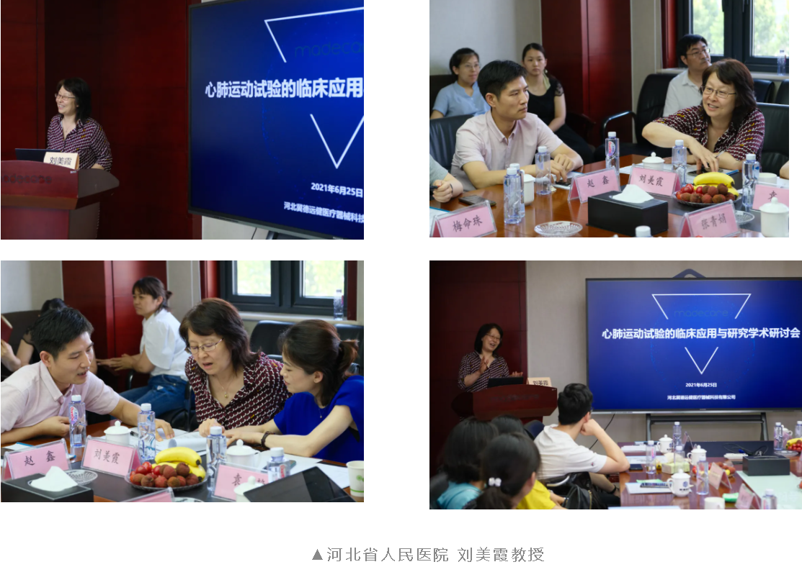
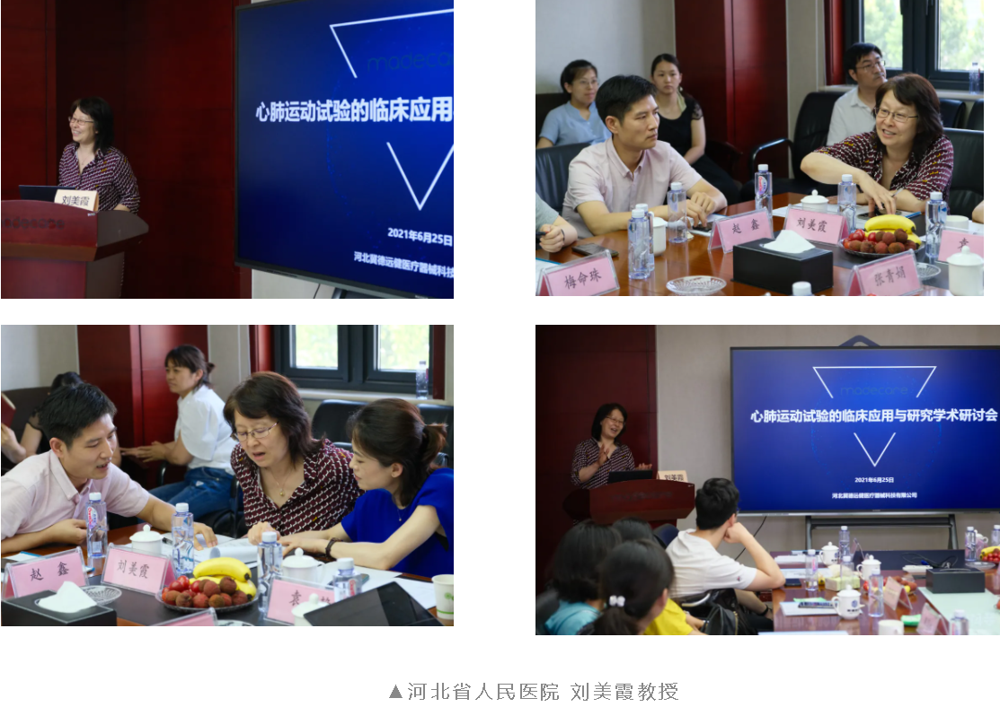
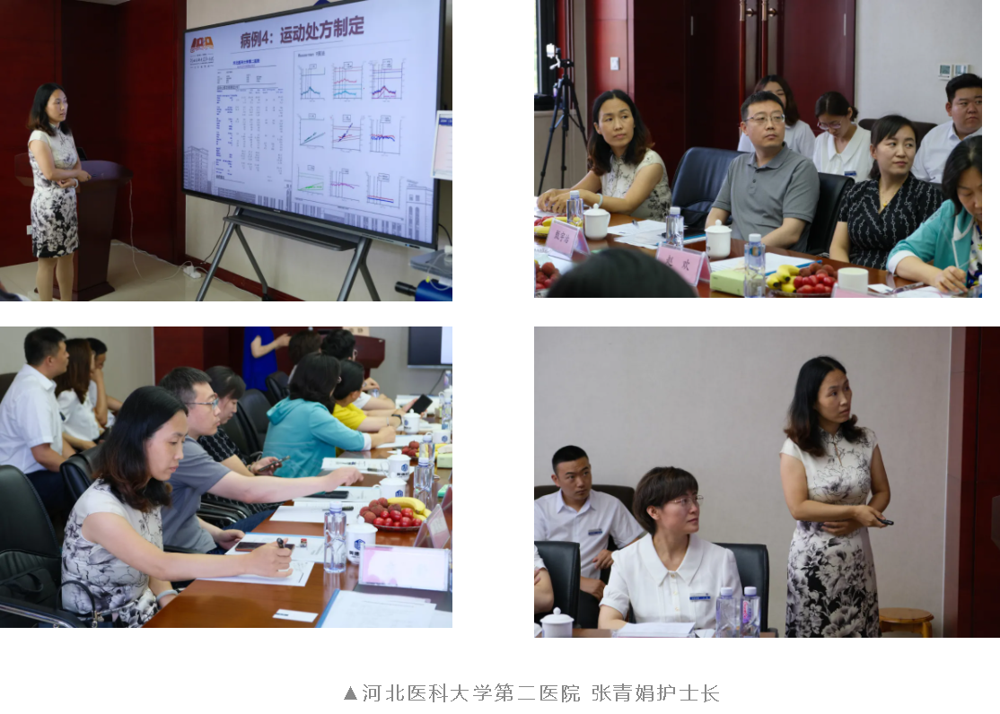
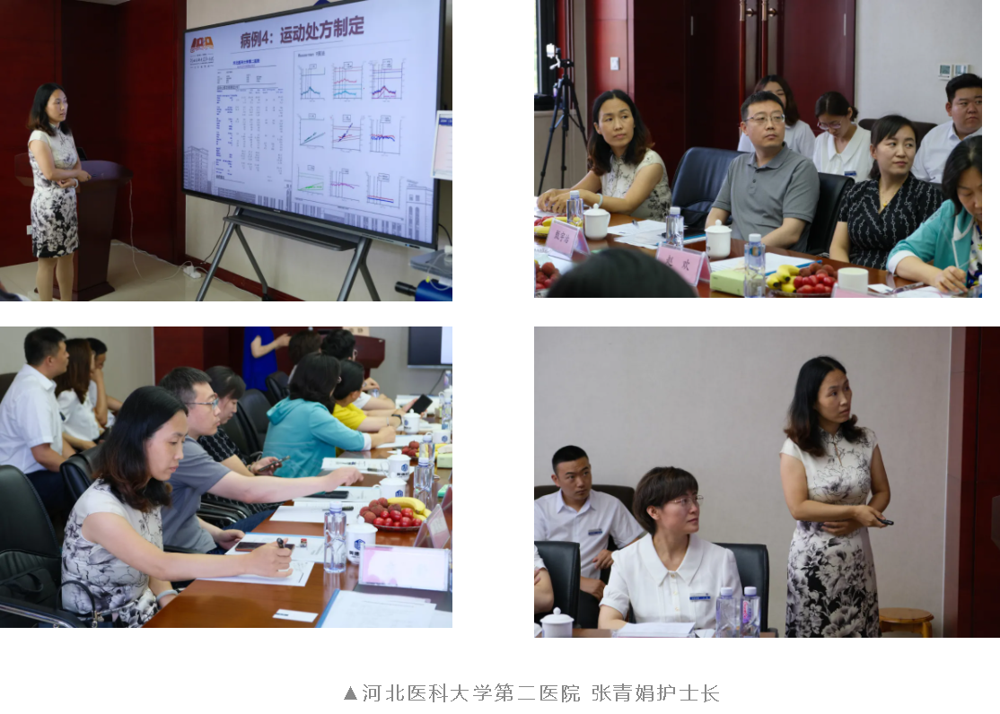
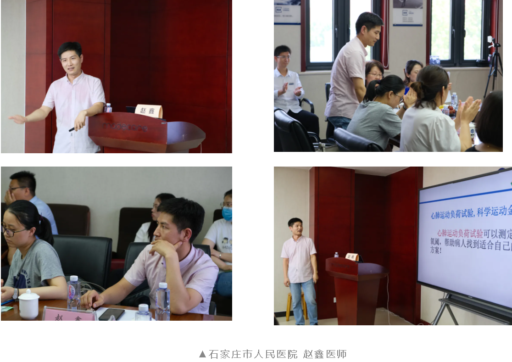
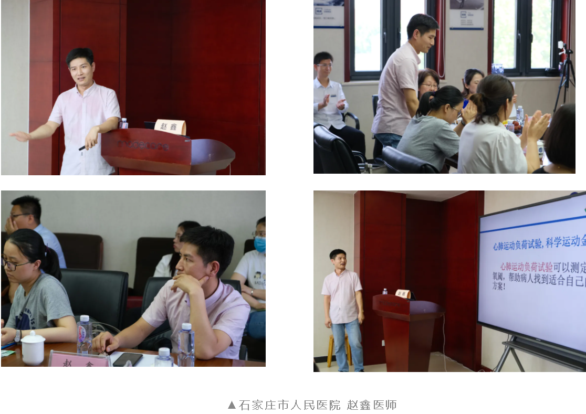
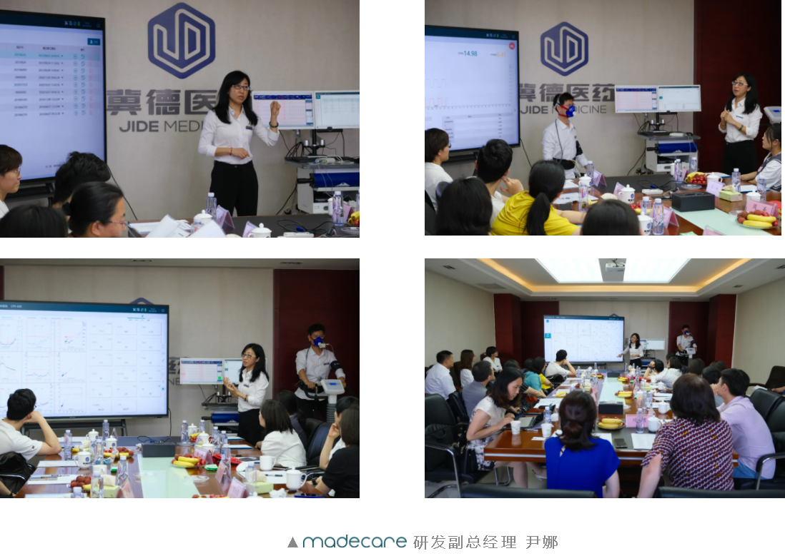
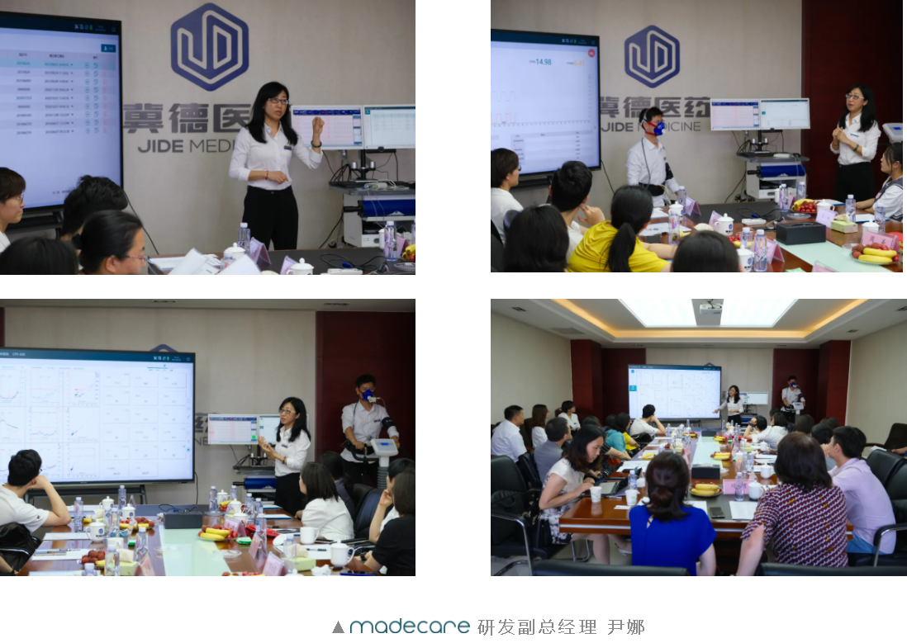

远健动态
2021年6月25日由冀德远健旗下公司美德远健举办的心肺运动试验临床应用与研究学术研讨会在河北石家庄召开。来自河北省临床心脏康复的医务工作者参加了此次学术研讨会。
美德远健携高级心肺功能评测系统 CPX-600参加了这次学术研讨会，为在场的专家提供了学术交流的技术操作平台，并就心肺运动试验临床应用与心脏康复新技术等前沿热点问题进行了广泛学术交流。

 

 

 

此次会议，madecare将携能将CPET测试“化繁为简”的CPX-600高级心肺功能评测系统隆重登场。

高级心肺功能评测系统 CPX-600 演示
 



配有遥测运动心电及血压的高度自动化心肺评测系统（CPX）


心内科、呼吸科、康复科等需要进行心肺功能测定和康复的患者，以及各种需要心肺功能评测指导下的身体康复的患者。

流速、容量测试
一口气法气体成分分析（VO2， VCO2）
静态/动态肺功能测试
静态/运动心电图测量及分析
基础/营养代谢测定及分析
运动血压测量和监控
血氧饱和度测量和监控
无创心排量测量（Wasserman）
辅助分析流程
ACSM运动处方
多维度数据导出
精准测量、高度可靠
-快反应气体成分分析
-专利设计流量传感器
易学易用
-多维导航
-一键自动定标
-智能辅助
全周期（早、中、后期）适用
无线分立的数据采集
紧凑型、可穿戴式设计
国际权威的美国心脏协会（AHA）
美国胸科协会（ATS）
美国胸科医师协会（ACCP）
美国运动医学会（ACSM）

此次学术研讨会推动了心脏康复中心标准化、规范化和专业化的建设，为心脏康复领域的医务工作者搭建了高水平的学术交流平台，充分展示了心脏康复的学术及临床研究成果，将进一步推动心脏康复的发展。

与此同时，madecare 高级心肺功能评测系统 CPX-600 得到了业内专家学者们的高度赞赏。

至此，2021年心肺运动试验临床应用与研究学术研讨会圆满落幕未来，美德远健会参与更多丰富多彩的学术活动与康复同仁们提供案例分享、交流、展示的平台不断为中国康复事业的发展贡献力量madecare依旧在等您